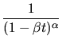
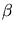
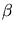

INSTITUTO TECNOLÓGICO DE COSTA RICA.
ESCUELA DE MATEMÁTICA
TERCER EXAMEN PARCIAL
Probabilidades
II SEMESTRE DEL 2000
Probabilidades
II SEMESTRE DEL 2000
Trabaje de forma clara y ordenada. Justifique debidamente cada respuesta. Use bolígrafo, en caso de trabajar con lápiz, no se aceptan apelaciones.
- Sea X el tiempo, en minutos, entre dos llegadas sucesivas en una ventanilla de atención
de un banco. Si X sigue una distribución de tipo exponencial con
 = 2,
calcule lo siguiente: (4 puntos)
= 2,
calcule lo siguiente: (4 puntos)
- El tiempo esperado entre llegadas sucesivas.
- La desviación estándar del tiempo entre llegadas sucesivas.
- La probabilidad de que el tiempo transcurrido entre una llegada y la llegada sucesiva sea menor que 7 minutos.
- El tiempo esperado entre llegadas sucesivas.
- Si X es una variable aleatoria de manera que su función generadora de
momentos es
mX(t)=, Calcule VAR(X) (4 puntos) - Suponga que el tiempo que emplea una persona en realizar una tarea
es una variable aleatoria que sigue una distribución gamma con parámetros
 = 2 y
 =
= 2 y
 =  ¿Cuál es la probabilidad de que tarde:
¿Cuál es la probabilidad de que tarde:
- A lo sumo una hora. (4 puntos)
- Entre .5 y 1.5 horas.
y si:
f (x) = x
x - 1 e-x/
- 1 e-x/ para x positivo.
para x positivo.
- A lo sumo una hora. (4 puntos)
- El rendimiento de cierto cilíndro de gas está normalmente distribuido
con una media de 6 horas y una desviación estándar de .5 horas. Este gas se
vende en paquetes de 5 cilíndros. Encuentre el tiempo de duración,
que sea excedido sólo por el 5% de los los paquetes. (4 puntos)
- La duración promedio del mezclador de un cierto fabricante es de 5
años, con una desviación estándar de un año. Asumiendo que las
duraciones de estos mezcladores siguen aproximadamente una distribución normal,
encuentre: (4 puntos)
- La probabilidad de que la vida promedio de una muestra aleatoria de 9
de tales mezcladores caiga entre 4.4 y 5.2 años.
- El valor de
 a la derecha del cual
caería el 15%
de las medias calculadas de la muestras aleatorias de tamaño 9.
a la derecha del cual
caería el 15%
de las medias calculadas de la muestras aleatorias de tamaño 9.
- La probabilidad de que la vida promedio de una muestra aleatoria de 9
de tales mezcladores caiga entre 4.4 y 5.2 años.
- Un médico atiende un paciente en un tiempo que es una variable
aleatoria con media
 = 8 minutos y desviación estándar 3 minutos.
Si debe atender un total de 40 pacientes calcule:
= 8 minutos y desviación estándar 3 minutos.
Si debe atender un total de 40 pacientes calcule:
- La probabilidad de que atienda todos los pacientes en menos de 5 horas, asumiendo que los pacientes ingresan, en forma continua.
- La probabilidad de que el tiempo promedio de atención sea superior
a 7.5 minutos